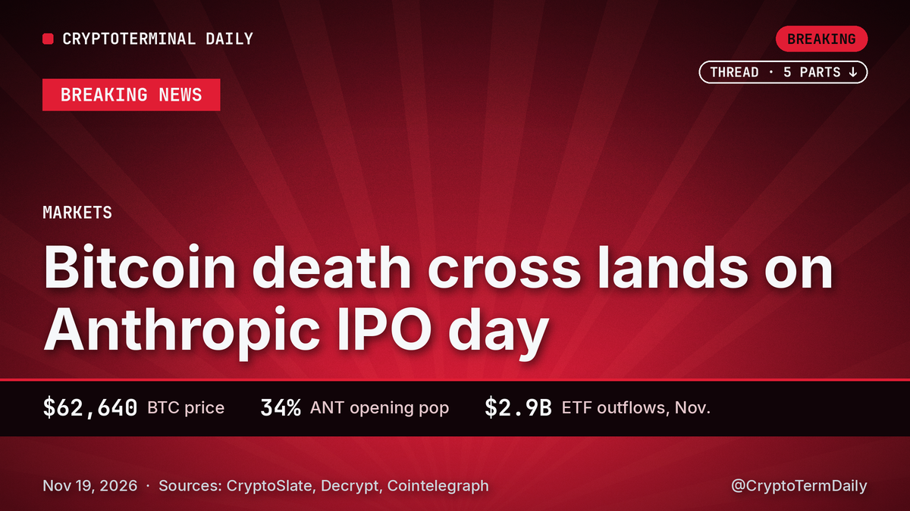

Bitcoin's Death Cross Lands on Anthropic's Biggest Day

Anthropic's Nasdaq debut was supposed to be the AI trade's victory lap. It was a strong day for the stock and a poor one for nearly everything else, Bitcoin included.
A record debut, a weak tape
Anthropic trades under the ticker ANT. It sold 980 million shares at $83 and raised $81.34 billion, the largest IPO ever in the words of economist Mohamed El-Erian. The stock opened at $111.50, up 34%, and briefly lifted the company's market value past $2 trillion. Cointelegraph reports a high of $115 before the shares slipped under $100. Hyperliquid perpetual futures traders had already priced the stock near $103, implying a valuation of about $1.845 trillion, so the open was less a surprise than a confirmation.
The wider market did not follow. Midday in New York, Decrypt had the Nasdaq Composite down 1.55%, the S&P 500 down 1.59% and the Dow down 2.03%. Investors are still asking whether the huge spending on AI infrastructure will earn an adequate return, and the IPO did not answer that. Cointelegraph noted that the Nasdaq briefly gained 0.6% on the excitement before turning red.
Bitcoin's picture
Bitcoin changed hands around $62,640, down 0.6% on the day, and fell as low as $62,250 during the US open, according to Cointelegraph's TradingView data. That is a third retest of the $62,000 area. The coin has dropped roughly 28% from a late-September peak near $87,000.
Decrypt's technical read is blunt. Bitcoin sits under both its 50-day and 200-day exponential moving averages, with the shorter average below the longer one. That is the alignment behind an EMA-based death cross, and Decrypt says the crossover was confirmed Thursday. A caveat matters here. The classic death cross uses simple moving averages. The exponential version reacts faster to recent prices, so it tends to flash earlier and more often.
Two momentum gauges add to the picture. The relative strength index reads 21.3, far under the 30 level traders call oversold. That can come before a relief rally. The average directional index stands at 41.2, and readings above 25 usually mark a strong trend. With the negative directional line above the positive one, sellers hold the advantage. Decrypt is careful to add that a high ADX alone does not mean a reversal is near.
Did the IPO drain crypto?
The tempting story is rotation: money leaves Bitcoin to buy Anthropic. The evidence does not support it yet. Decrypt says the claim remains unproven, and points out that Bitcoin and AI stocks have declined together, which looks more like a wider retreat from risk than a switch from one asset to another.
Crypto's weakness also began before the listing. Funds that hold Bitcoin directly in the US have seen about $2.9 billion leave in November, with $306.4 million of it going Wednesday. Treasury yields are climbing and traders expect more Federal Reserve rate hikes.
CryptoSlate adds the view of the European Central Bank. In its November review, the ECB cautioned that markets have often done worse after a wave of new listings. Its worry is what comes once the wave ends: AI companies still have construction and obligations ahead of them, and falling share prices plus nervous lenders could make fresh funding harder to find. For crypto, CryptoSlate says the real question is contagion. Would an AI pullback spread into broader risk selling? The IPO draining money from the sector is the lesser issue. The ECB said the issuance surge does not currently pose a systemic risk. It also found that higher issuance went with weaker later returns in the US, though the link explained only about a tenth of the variation.
Levels to watch
Decrypt's chart gives a simple map. The nearest support is $62,019, almost directly under the current price. A decisive daily close below it could expose the psychological $60,000 mark, then $56,841. On the upside, the first hurdle is $66,512. Then come $69,292 and $71,539, where sellers may show up again.
What it means
The lesson from Thursday is about correlation. Bitcoin did not rally with the best AI headline of the year, and it did not need the IPO to explain its slide. Rates, ETF outflows and a risk-averse tape are doing that work. If AI shares keep wobbling, crypto has been behaving like a high-beta cousin rather than a hedge.
Oversold readings invite bounce hunters, but oversold markets can keep falling. The practical watch list is short: whether Bitcoin holds $62,019 on a daily close, whether ETF outflows slow, and whether Wall Street steadies. Until one of those turns, the death cross is a description of the trend, not a forecast of its end.